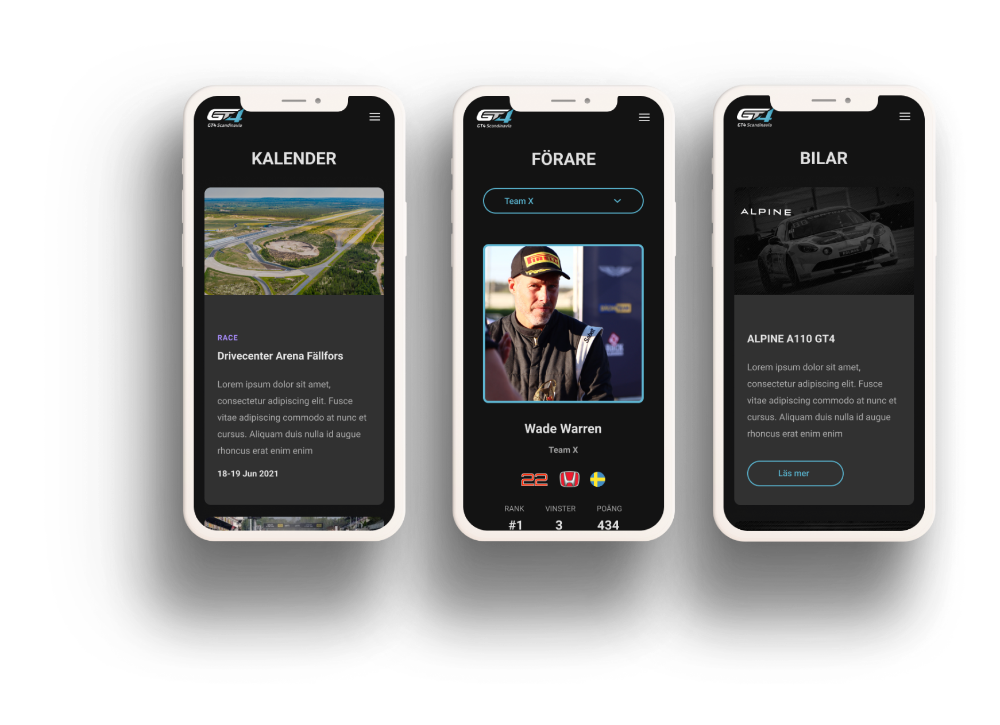

GT4 Scandinavia
Client
GT4 Scandinavia
Role
UX/UI Design
Tools
Figma, Miro
DEFINING THE PROBLEM
The GT4 Scandinavian Series is a highly competitive sports car championship that showcases the best drivers and vehicles from across the Nordic region. To elevate their online presence, the series decided to commission a new website that would capture the excitement and luxury of their races.
The goal of the new website was to create a visually stunning platform that would provide fans and drivers with a seamless user experience. The design needed to be sleek and modern.
UNDERSTANDING THE USERS
WHAT'S COMING
Countdown and information about next race. Calendar. Sign up for newsletter.
PRESENT INFORMATION
Top three ranking. News. Teams and drivers. Courses. About. Other Series. Cars. Documents. Partners.
RACE
Photos. Results. Live timing.
IDEATION
To ensure that the final product met the needs of both the users and the company, a lo-fi prototype was created. This prototype was developed based on a deep understanding of the user needs and the requirements of the company.
This prototype was not fully functional, but it provided a rough outline of the product's design and functionality. The prototype was then tested to get feedback on its usability and effectiveness. Based on the feedback received, I refined and iterated on the prototype, making adjustments and improvements as needed.
FINAL SOLUTION
After receiving feedback from the client and colleagues, a decision was made to move forward with creating a hi-fi prototype. The hi-fi prototype was developed as a more detailed and polished version of the lo-fi prototype, with a greater focus on aesthetics and functionality.
The hi-fi prototype was designed to provide a more realistic representation of the final product, allowing the client and colleagues to better understand how the product would look and function once it was fully developed. It also allowed the development team to identify and resolve any potential issues or design flaws before moving forward with the final product.
WHAT I LEARNED
Working on this project has been a great opportunity for me to develop my skills in iterative prototyping, teamwork, and client meetings.
Through the iterative prototyping process, I was able to refine my skills in creating low-fidelity and high-fidelity prototypes, as well as testing and refining those prototypes based on user feedback.
Working with different people from various backgrounds and areas of expertise taught me how to communicate effectively, manage my time, and delegate tasks to ensure that the project was completed on time and to a high standard.
Finally, participating in client meetings was a valuable experience that taught me how to effectively communicate with clients and understand their needs and goals.